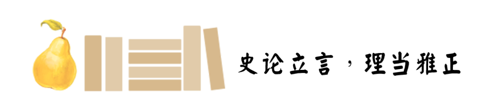
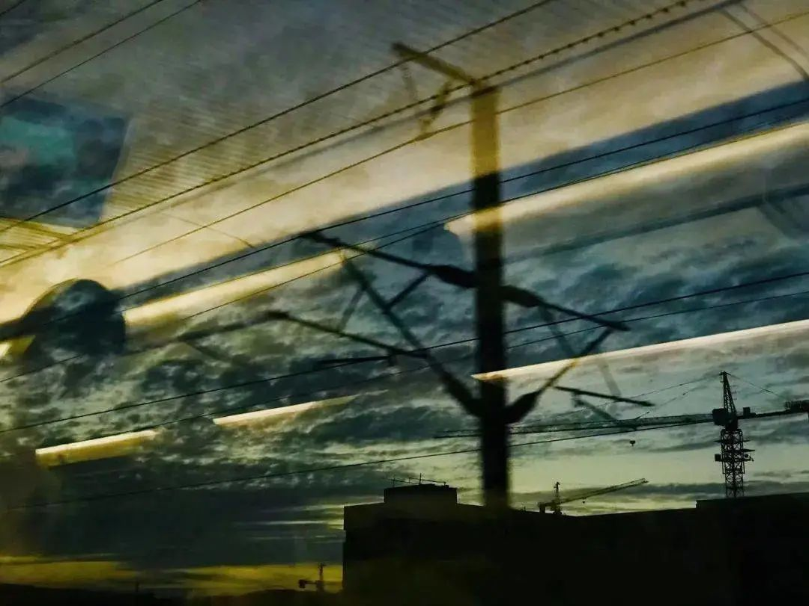
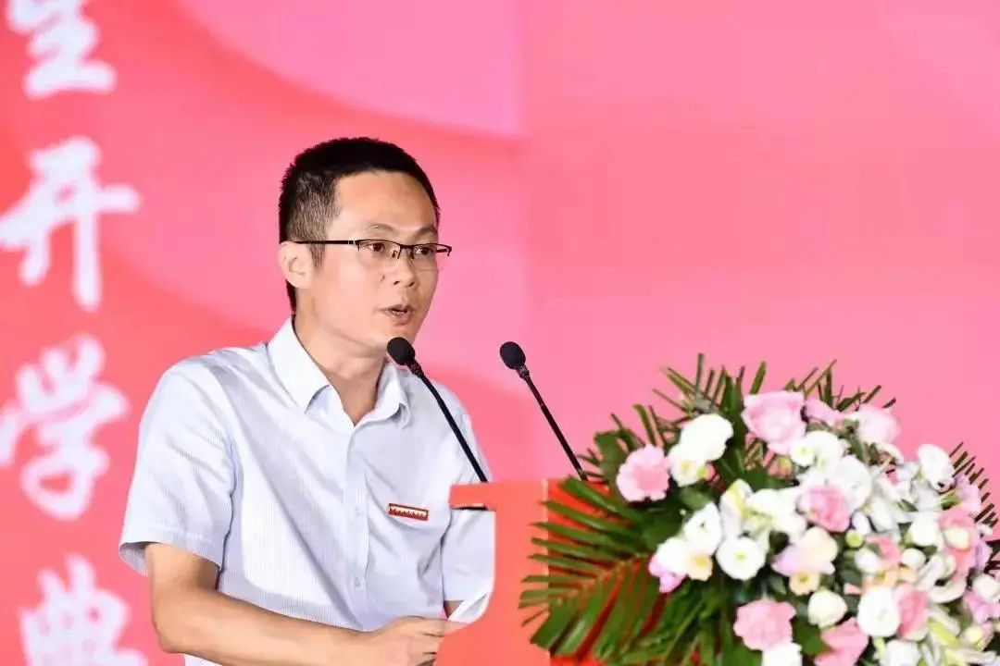
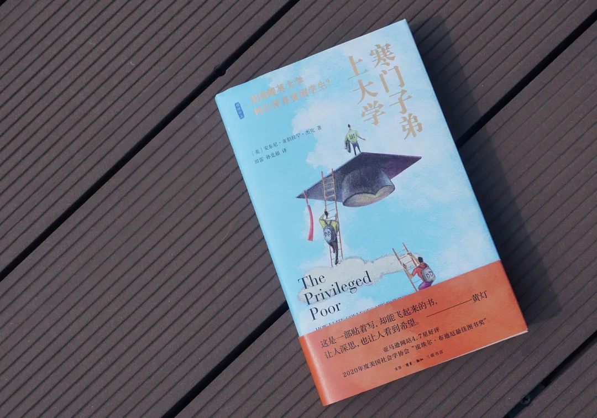
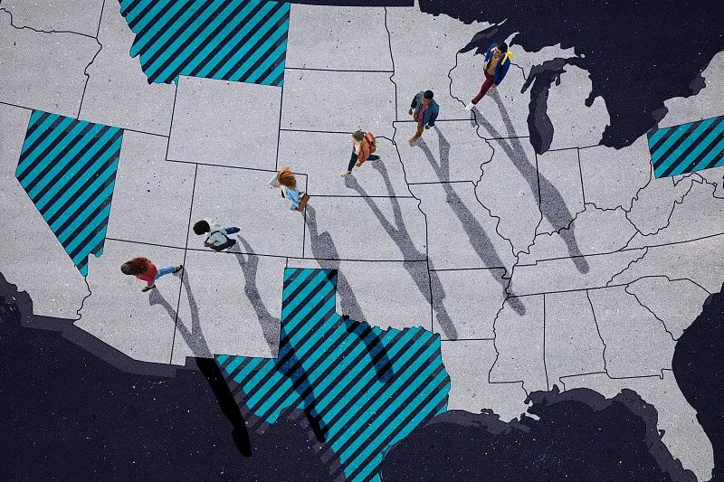
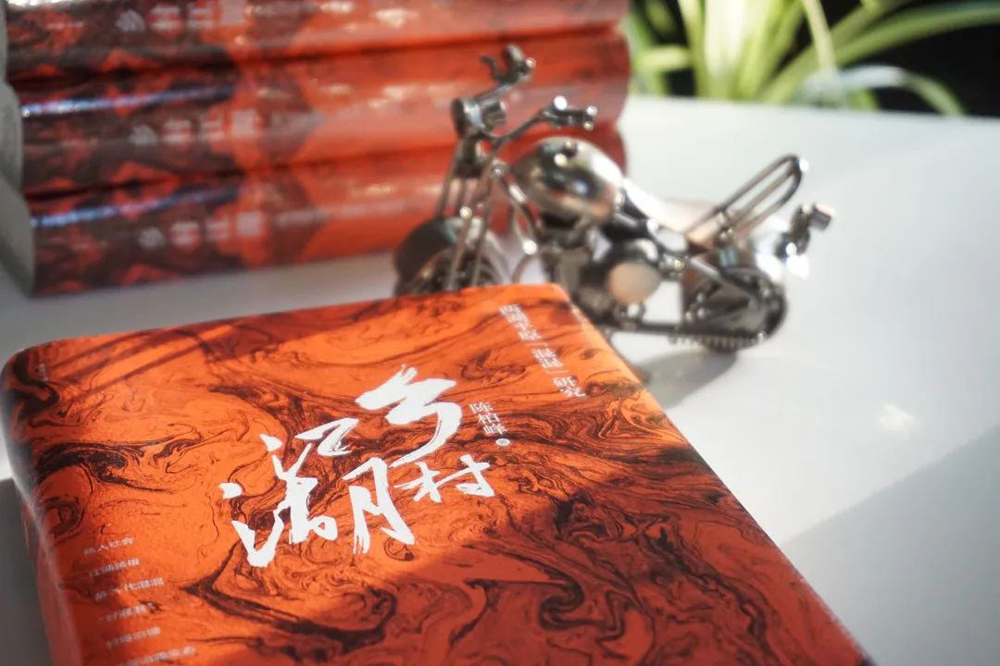
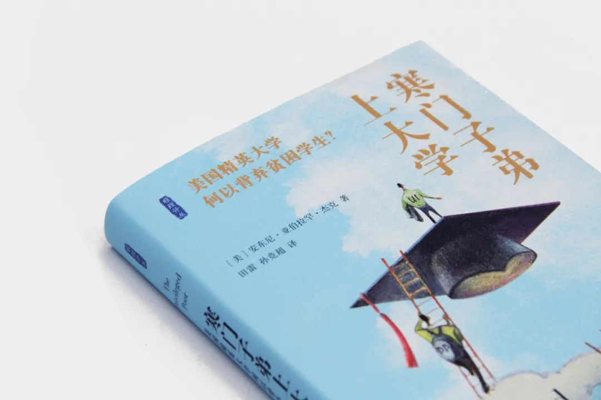
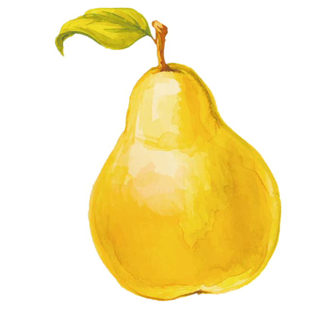

收录于合集


“双一流”大学没有“废物”
2021年法学院开学典礼上的致辞
致辞人 | 陈柏峰
……

陈柏峰 ，中南财经政法大学二级教授、博士生导师，现任中南财经政法大学法学院院长、党委副书记（兼）。陈柏峰教授为第九届全国杰出青年法学家，兼任湖北省人大常委会法律顾问、湖北省法官检察官遴选委员会委员、中国法学会法理学研究会常务理事、湖北省法学会常务理事、中国社会学会法律社会学研究会副会长等。
亲爱的同学们、老师们，在线的校友们、家长朋友们：
大家晚上好！祝贺同学们进入中南财经政法大学法学院，实现中学时代的梦想！基于各位梦想的实现，法学院今年迎来一个突破——本科录取调剂率为0%，第一志愿录取率达到92.6%。至于研究生第一志愿录取率，法学院向来是100%。这既源于大家的选择，也是过去几年法学一流学科建设成就的社会效应，更是几十年来中南大法学人才培养的社会积累。
今天，我第一次以院长身份面对同学们——几周前还是老院长徐涤宇教授带队迎接你们进入校园。这几天，我一直在想，跟大家讲点什么呢？就谈谈进入校园之后的适应吧！校园适应既是同学们立即面临的问题，也是贯穿整个大学时代、伴随各位成长的重要议题。
刚才赠送给大家的书《寒门子弟上大学》，就关涉这个议题。这本书研究了美国精英大学来自不同社会阶层的大学生群体，有中产以上的高富帅、白富美，也有挨饿受冻、畏首畏尾的寒门子弟。寒门子弟分为两类。一类是“寒门幸运儿”，他们通过奖学金项目进入了昂贵的私立高中，提前接触到精英的校园环境，积累了适应这种环境的能力。另一类是“双重贫困生”——既是经济上的穷人，也是文化适应上的低能者，他们通过奋斗成为精英大学的宠儿，但是缺乏适应精英环境的能力，在校园到处碰壁，成长不顺，严重的甚至遭遇心理健康挑战。

▲《寒门子弟上大学：美国精英大学何以背弃贫困》，[美] 安东尼·亚伯拉罕·杰克/著 田雷 孙竞超/译 ，生活·读书·新知三联书店2021年8月
这本书是我的朋友田雷教授翻译的，八月份甫一出版就邮寄给我。阅读过程中我不断受到触动，不自觉闪回自己的大学生涯。现在，经我建议，法学院把这本书赠送给大家。书中触及美国的校园适应议题，用的是阶层和社会平等视角。平等是中国法律和社会追求的基本价值，而不平等具有广泛性。
田雷与我是同一级的大学生，我们被誉为“跨世纪的一代”。1998年，17岁的田雷从家乡江苏沛县出发，到四百公里以外的南京大学。来自县城的他开始困惑：为什么我不会打篮球？为什么他们都会各种乐器？为什么上海来的同学目标是出国留学，而我却想着回老家做公务员？同一年，18岁的我从家乡湖北咸宁出发，到达八十公里外的这个校园。来自乡下的我，没有田雷那么多困惑，但自卑、胆怯、惶恐始终伴随大学生涯。进入大学前，我就拥有这样的常识——人与人之间是有不平等的。田雷来自县城，中学时代也许对不平等不太有感受，进入大学后突然感受到县城青年与大城市青年的距离；而我来自农村，初中开始在市区重点中学上学，类似于“寒门幸运儿”，早已适应城乡差别，进入大学后不再有那么多震撼。
大学毕业后，田雷没有回老家做公务员，而是继续在南京大学攻读法学硕士学位，之后到香港中文大学攻读政治学博士学位，再后来又去耶鲁大学读了法律硕士学位（LL.M.）。工作后，他先后在山东大学、重庆大学、华东师范大学等“一流大学”任教。可见，田雷很快就适应了校园，与大城市青年站到了同一起跑线上。我也从大学时代开始，一点一点进步，不断积累自信，直到成为教授后，心态才真正放松，不再胆怯，不再惶恐，无所畏惧。我从未与田雷交流过校园适应乃至更广泛的社会适应的历程。我猜想，相对而言，他走得比我轻松。
有一句话说，“幸福的人用童年治愈一生，不幸的人用一生治愈童年。”校园适应和社会适应，都与此类似。高富帅、白富美用优雅轻松、淡定从容面对生活，而寒门子弟难免心态紧张、负重前行。总体而言，寒门子弟的校园适应，困难更多一些。尽管如此，仍然是各有各的困难，各有各的挑战。重要的是，我们都要学会去“治愈”。“治愈”不仅仅只是为了适应，还为了成长。

阅读《寒门子弟上大学》，可以认识美国社会和校园，平等的表象被打破，光鲜的表面之下隐藏着巨大的不公，来自底层的大学生艰辛前行。类似的问题在中国同样存在。在我和田雷上大学的年代，社会分化刚刚开始，明显可见的主要是城乡差别，市场经济导致的深刻分化开始发生，尚未广泛反映到社会心理上。今天，中国已经全面建成小康社会，消灭了绝对贫困，美国大学里食不果腹的大学生，在我们这并不存在。但中国社会仍然存在很大分化，这种分化深刻影响校园，深深嵌入我们的心智结构。“小镇做题家”、“985废物”等话题，成为时代和大学不得不关心、不能不回应的问题。
“小镇做题家”，就是出身村镇的寒门弟子。他们在中学阶段依靠“题海战术”，迫于师长的压力与管教取得优异成绩，考入一流大学。但在步入大学后，光环迅速瓦解，学习难以超群，眼界受到局限，社交能力成为发展短板。他们有着学霸的光环，但挣不脱成长环境的束缚，缺乏一定的视野和资源，哀叹前途迷茫，从而自嘲“985废物”。
“小镇做题家”之所以成为问题，是因为国家高速发展四十年，城乡、区域、阶层的经济、社会、文化发展不平衡投射进了校园，在我们每个人身上留下痕迹。从教育公平的角度，必须防止重蹈美国覆辙——教育成为社会不公平的再生产机制。常春藤名校的学生，大多来自精英阶层，且家中往往有长辈校友。精英大学将社会不平等正当化，阶级不平等、种族不平等充斥其中。而在中国，城乡差别、区域差别、阶层差别同时存在，教育还能不能改变命运？这不仅是教育问题，更是政治问题，是治国者需要面对的大问题。
田雷教授现在在思考教育的政治，而1998年来自县城的田雷同学需要在震惊和困惑中适应校园。同样，今天我们每位同学都要面对校园适应，并在适应中成长。在这方面，我有一些体会和思考，借此机会向大家分享。
首先，我们需要意识到自身的思维缺陷，重新思考人生目标，开放更多可能性。很多学习能力出众的同学，从信息不发达的地方走出来，在狭隘的环境中被灌输了一些低价值的目标，并矢志不渝的为之奋斗。这无疑限制了选择更精彩的道路，很可能“贱卖”能力。一旦无法跳出成长的那个环境，这种目标固化为不可动摇的价值；而我们的智力水平又较高，自己会从“美梦”中惊醒，认识到那些价值的虚幻性，从而陷入痛苦与迷茫。
在此意义上，我们的校园适应，首先需要解放思想，将从前的“价值”放下，重新去观察世界，定位人生。聪明人应当掌握自己的命运，要努力跳出成长环境带来的枷锁。在这方面，我一直打心底里感激我的父亲，他是一位只受过三年小学教育的农民，年轻时曾摸索到过武汉和长沙，见过大城市。在我上大学时，他跟我讲：走出这个村子，就不要想挣钱这种事情，要立大志向，好男儿志在四方。他没法确切说清什么是大志向，但他知道要跳出乡下人的思维。
其次，我们应当利用大学这个平台，跳出思维的牢笼，积累成长和发展的资源。很多人不是意识不到自己思维的局限性，而是受制于家庭环境、生活环境的阻力太大，无法从中自拔出来。由于成长环境的物质或精神匮乏，他们缺乏安全感，不敢跳出思维的舒适区。偶尔跳出来，以为自己可以掌握人生，很快又遭遇各种困难，从而变得“清醒”而后退。这是人之常情。真正实现逆袭，需要坚强的意志和顽强的毅力。
大学给我们创造了一些条件，但是，这些条件不是自动上门的，需要我们自己通过努力去抓住。一般来说，富家子弟确实更加善于抓住各种机会，利用这些机会来实现自我发展。寒门子弟更加需要有这种意识。正是因为寒门子弟的资源更少，大学所能提供的资源对他们而言更加弥足珍贵。“寒门难出贵子”反映了某种社会焦虑，但并不是事实，到今天为止，大学仍然是实现社会阶层上升的重要渠道。

▲ 陈柏峰的作品《乡村江湖：两湖平原“混混”研究》
再次，我们应当摆正心态，学会平衡欲望与现实，在坚持、妥协和选择中实现自我。这是我们终生都要面对的问题，而进入大学是其中一个关口。我们大多数人都从某个小地方来，在校园里会形成新的秩序。每个人会被定位，自己也需要重新定位。曾经的学霸，可能发现“做题”的能力不再重要，周围每个人都有特长，而你就像田雷一样，既不会打篮球，也不会任何一种乐器。同样，高分考进来的研究生同学，可能发现你的同学本科时就开始学术训练，阅读的学术著作是你望尘莫及的。尤其高考进入大学，这是我们人生中理想与现实之间的冲突和摩擦最为激烈的阶段之一，因此保持积极的心态十分重要。
理想和现实的差异、能力和欲望的不匹配、只会学习不会解决矛盾的痛苦、小我和大我的关系，等等，都会刺激我们的神经，甚至挑战心理健康。负责学生工作的筱彤副书记，给我讲过很多心理偏差的事例，它们让人倍感惋惜。我有一名研究生，从一所普通的本科院校考进来，一直十分上进，但他拼尽全力也做不到最好，有的同学智力基础比他好，学术训练比他早，他于是陷入焦虑。我对他说：做第二、第十、第一百，就没有意义吗？出路在于承认自己的实际处境，并解构自己的欲望。我们要努力，也要看到努力的极限，要学会与自己和解，要承认人生不止某个方面的竞争，大学里不止学业的竞争。
同学们，进入校园后，我们会有很多困扰。我们需要应对这些困扰，学会适应，还要在适应中成长。“双一流”大学没有“废物”，只有心态需调适的“人才”。我们要清醒认识自己的处境，认识到视野不足和资源匮乏，完成校园适应过程。然而，接下来绝不是麻木不仁或怨天尤人，而应当树立健康的心态，坦然面对自己的缺陷，利用大学平台提供的资源，弥补短板，在适应中成长。像田雷那样，在学业上走向世界名校，在事业上走向成功。
END

寒门子弟上大学
美国精英大学何以背弃贫困学生
编辑 | 二二不二

读史阅世论雅理~
微信 | @雅理士多德
豆瓣 | @雅理读书